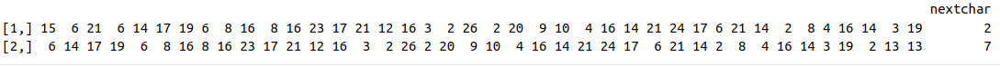

Using CNN for a Domain name Generation Algorithm
The current post is the first part of a series of posts discussing the development of an algorithm for domain generation (DGA) See the second post here. The current post is centered around the preprocessing aspects of a DGA using Keras and the R language.
What is DGA?
A domain generation algorithm (DGA) is a technique used by malware to generate a large number of domain names that can be used as rendezvous points for the malware to communicate with its command-and-control (C2) server.
This technique is used to make it more difficult for security experts to block communication between the malware and its C2 server, as the domain names used by the malware are generated dynamically and change frequently.
By using a DGA, the malware can generate domain names that are seemingly random and use them to establish a connection to the C2 server, making it harder for security researchers to detect and stop the malware’s activity.
A common approach for DGA detection is the so-called Lexicographical-based. Under this approach, the idea is to classify the domains by studying the statistical properties of the characters conforming to the domain name. In other words, we can use several Natural Language Processing (NLP) strategies for detecting algorithmically generated domains (AGD). I personally was involved in the development of a simple approach using Convolutional Neural Networks (CNN) for detecting these types of domains.
Using CNN for DGA. HOW?
But now, the approach is a little bit different. Instead of using CNN for domain detection, we are going to use them for generating pseudo-random domains. There is nothing new in this approach. Neural networks have been used for generating text for almost 10 years… (maybe more??). There are plenty of examples of doing this over the internet. Here we are going to use an example from the Keras website for character-level text generation and we are going to adapt it for DGA.
⚠️ Please be prepare for some inefficiency in the preprocessing pipeline. ⚠️
The general idea is to create a model capable of predicting the next character of a sentence. For doing that, we need to do some preprocessing. The approach is pretty simple. We are going to create a dataset containing a fixed portion of a domain name as input and the label will be the next character in that domain name.
So the image we have a portion of the facebook.com domain name. We can create a dataset in the following way:
input label
faceb o
acebo o
ceboo k
ebbok .
book. cIn this case we have moved one step forward to create several examples. The same can be done with other domain names of course. Of course, we will need some more preprocessing for adapting the above dataset to something usable by Tensorflow and friends. Let’s see what we need to do.
Keras and TensorFlow have a lot of functions for going easily through to preprocessing pipeline. However, in this post, We will do it the hard way. We will do it from scratch. I think this is useful just to get the idea of what is happening under the hood and I recommend doing it at least a couple of times before jumping to the preprocessing Layers provided by Tensorflow.
Preparing the data
Load some required libraries for doing the work…
library(reticulate)
library(tensorflow)
library(keras)
library(tokenizers)
library(stringr)
library(dplyr)
library(purrr)So the first thing we are going to do is to read a CSV file containing domain names.
The CSV file contains one domain name per row and the “label” column specifies whether the domain is “normal” or not. In this case, we are going to filter the data to only include “normal” domains, then randomly sample 3% of the data (just to keep things small), and concatenate the remaining domains into a variable called domains The resulting domains variable will be used as input to the DGA algorithm based on CNN.
text <- readr::read_csv("https://github.com/harpomaxx/deepseq/raw/master/datasets/argencon.csv.gz")
text<-text %>% filter(grepl("normal",label))
text<-text %>% sample_frac(0.03)
domains <- text %>% pull(domain) %>%
str_c(collapse = " ") Once we have selected the domain names, the next step is to perform the so-called tokenization. Tokenization is the process of splitting text into individual “tokens” or units, which can be words, characters, or other types of units depending on the task. In this case, we are first tokenizing the domains string into individual characters using the function tokenize_characters() from the tokenizers package.
domains <- domains %>%
tokenize_characters(lowercase = TRUE,
strip_non_alphanum = TRUE,
simplify = TRUE)So at the end of this first step in the tokenization process, we end with an array with all the characters present in the datasets.
[1] "g" "o" "p" "a" "d" "e" "n" "a" "k" "a" "y" "a" "m" "a" "s"
[16] "k" "i" "c" "o" "m" "a" "m" "p" "e" "r" "k" "i" "n" "r" "u"
[31] "o" "p" "e" "n" "c" "a" "r" "t" "d" "e" "m" "o" "s" "o" "r"Now we will start preparing the domains for use as training data in a Keras model by splitting it into sequences of length maxlen, and creating a dataset consisting of each sequence and its corresponding “next” character.
maxlen <-40
steps <- 3
dataset <- map(
seq(1, length(domains) - maxlen - 1, by = steps),
~list(sentence = domains[.x:(.x + maxlen - 1)],
next_char = domains[.x + maxlen])
)
dataset <- transpose(dataset)
seq_x <- dataset$sentence %>%
map(~str_c(.x,collapse= "")) %>% unlist()
seq_y <- dataset$next_char %>% unlist()The map() the function is being used to iterate over a sequence of indices (characters), with each iteration creating a new element in the dataset a list consisting of the current maxlen-length sequence and its corresponding next character. The by = steps argument to the seq() function controls the spacing between these indices so that only every steps-th index is used. This effectively skips over some of the input data, reducing the amount of overlap between the input sequences and making the training process more efficient.
The resulting dataset list is then transposed to create two vectors seq_x and seq_y, which contain all of the input sequences and their corresponding target characters, respectively.
seq_x seq_y
[1,] "netempregogovptkobayashicomtwpetmagcombr" "a"
[2,] "empregogovptkobayashicomtwpetmagcombrall" "f"
[3,] "regogovptkobayashicomtwpetmagcombrallfuc" "k" Now, we are going to create a mapping between individual characters and integer values. In particular, we are going to use one-hot encoding, where each character is represented as a sparse vector with a 1 in the position corresponding to its integer index and 0 elsewhere. But first, we need to convert each character into its corresponding integer representation.
valid_characters_vector <-
stringr::str_split("$abcdefghijklmnopqrstuvwxyz0123456789-_.+*,\"",
pattern = '')[[1]]
valid_characters_vector<-c(valid_characters_vector)
tokens <- 1:length(valid_characters_vector)
names(tokens) <- valid_characters_vectorThe valid_characters_vector is a character vector that contains all of the valid characters that can appear in the input text. The str_split() function from the stringr package is used to split the string into individual characters, and the resulting vector is appended to valid_characters_vector using the c() function.
The tokens vector is then created as a sequence of integers from 1 to the length of valid_characters_vector. The names() function is used to associate each integer with its corresponding character in valid_characters_vector.
The process continues with the function tokenize() , which will convert the input data into a matrix of tokens considering some padding to the maximum length of the sequences.
tokenize <- function(data, labels, maxlen) {
sequencel <- sapply(data, function(x)
strsplit(x, split = ""))
x_data <- lapply(sequencel, function(x)
sapply(x, function(x) {
tokens[[x]]
}))
y_data <- lapply(labels, function(x)
sapply(x, function(x) {
tokens[[x]]
}))
padded_token <-
pad_sequences(
unname(x_data),
maxlen = maxlen,
padding = 'post',
truncating = 'post'
)
return (list(x = padded_token, y = y_data %>%
unlist() %>% unname()))
}The input to the function includes data, labels, and maxlen. data is a list of character vectors containing the input text data, labels is a list of character vectors containing the corresponding label data. In this case labels will refer to the next character in the sequence. Finally, maxlen is an integer representing the maximum length of each input sequence.
The function first splits each character vector data into individual characters using strsplit() and maps each character to its corresponding integer value using the tokens mapping created earlier. The resulting sequence of integers is then padded to a fixed length of maxlen using pad_sequences(), which is a function from the Keras package that pads sequences with zeros either at the beginning or at the end, depending on the value of the padding argument. The resulting padded matrix is returned as the x component of the output.
The labels data is processed similarly, but it is not padded since it represents the output labels and not the input data. The resulting sequence of integers is returned as the y component of the output.
So at this point, we will have something like this:

The final preprocessing step is done in the function preprocess_dataset_one_hot() . Here the idea is to convert the tokenized text data and labels into a format that can be used as input for a machine learning model that requires one-hot encoding of the input and output data.
n_samples<-nrow(seq_x$x)
n_tokens<-length(valid_characters_vector)
preprocess_dataset_one_hot <- function(data, labels, maxlen) {
labels <- labels %>% as.matrix()
dataset <- tokenize(data, labels, maxlen)
shape <- c(n_samples, maxlen, n_tokens )
dataset$x <- to_onehot(dataset$x, shape)
shape <- c(n_samples, n_tokens)
dataset$y <- to_onehot_y(dataset$y, shape)
return(dataset)
}The preprocess_dataset_one_hot() function is applied to the tokenized input seq_x and output seq_y to create a one-hot encoded representation of the dataset.
Specifically, it assigns the output of preprocess_dataset_one_hot() to the variable sentences_one_hot. The resulting object is a list containing two elements, x and y.
The x element contains a tensor of shape (n_samples, maxlen, n_tokens), where n_samples is the number of samples in the input data, maxlen is the maximum sequence length, and n_tokens is the number of unique tokens in the input data. This tensor represents the one-hot encoded input sequences.
The y element contains a tensor of shape (n_samples, n_tokens). This tensor represents the one-hot encoded output labels.
Finally, the code extracts seq_vectorized_x and seq_vectorized_y from the sentences_one_hot object, which is the one-hot encoded input sequences and output labels, respectively.
sentences_one_hot <- build_dataset_one_hot(seq_x, seq_y, maxlen)
seq_vectorized_x<-sentences_one_hot$x
seq_vectorized_y<-sentences_one_hot$ySum up
So far we have finished with all the preprocessing for building a DGA. The steps were:
- Get a dataset with domain names.
- Define a maximum length for the sequences and create a new dataset with a given sequence and the next character of the sequence.
- Convert each character to the sequence to an integer using tokenization.
- Convert each integer to one-hot encoding. (including the labels)
We are now ready to train a model for DGA. See the next post for learning how.
References
[1] An application of CNN for DGA detection. Some approaches for DGA detection are explained.
[2] Character-level text generation with LSTM using KERAS
[3] Deep Learning with Python (2nd Ed.) has a complete chapter devoted to generative approaches.
[4] Link to the GitHub repo containing most code shown here.